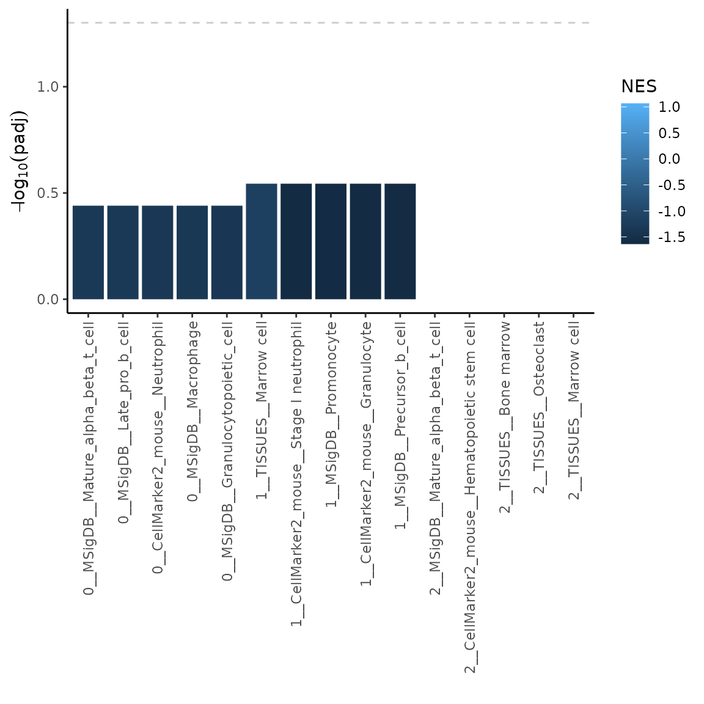
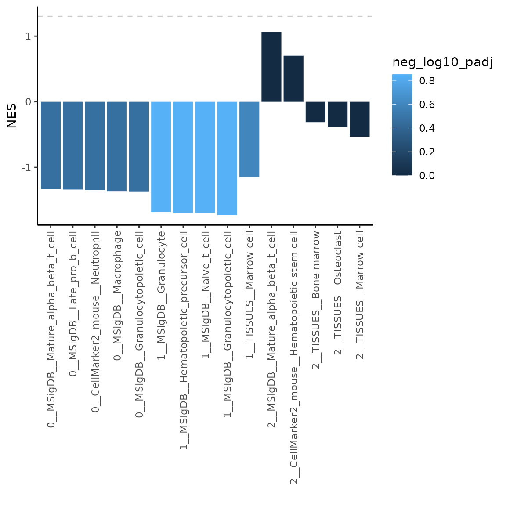

BoneCellType: R package for bone-relevant cell type assignment
Kristyna Kupkova
2023-10-03
intro_to_BoneCellType.RmdIntroduction to BoneCellType
The BoneCellType package aims to help assign cell types to single-cell RNA-seq clusters derived from bone samples. BoneCellType uses a custom-assembled database of bone-relevant markers (assembly approach described here). There are two approaches introduced here to reach this goal: 1) marker overrepresentation analysis using Fisher’s exact test, and 2) gene (marker) set enrichment analysis.
Note! The results produced with BoneCellType do not assign definitive cell-type labels; only an initial prediction based on statistical testing and further manual curation is needed.
Setup
Let’s load the BoneCellType package along with a few other packages whose functions are used in this tutorial.
The input into the functions presented here is a data.frame with
variable markers (i.e. features) for individual clusters that can be
obtained by using Seurat
FindMarkers function. Here we provide a previously
generated example dataset.
library(BoneCellType)
library(dplyr)
library(ggplot2)
# example dataset
varMarkerFile = system.file("extdata", "cluster_variable_features.csv",
package = "BoneCellType")
varMarkers = read.csv(varMarkerFile, sep = ",")
# show top rows of the example dataset
head(varMarkers)#> p_val avg_log2FC pct.1 pct.2 p_val_adj cluster gene
#> 1 1.551369e-202 7.978416 0.664 0.021 2.861810e-198 0 Hemgn
#> 2 5.127751e-104 16.393282 0.935 0.169 9.459163e-100 0 Mki67
#> 3 4.012367e-98 5.801448 0.701 0.078 7.401614e-94 0 Diaph3
#> 4 4.156995e-96 11.168982 0.776 0.107 7.668409e-92 0 Ank1
#> 5 1.869814e-87 8.421892 0.776 0.120 3.449246e-83 0 Sptb
#> 6 1.936041e-87 7.841105 0.785 0.123 3.571415e-83 0 Top2a1. Marker overrepresentation analysis
To calculate marker overrepresentation use markerEnrich
function. It automatically provides a database of bone-relevant markers.
Results can be further dirrectly plotted with an associated
plotMarkerEnrich function, output of which is an editable
ggplot object.
Note: While the default setting of
markerEnrich use all available variable markers per
cluster, based on practical experience, more reliable results can be
achieved by selecting only few top markers by setting the parameter
topN (as shown in the example below). Default mode selects the
top markers based on log2FC, this can be changed by setting the
parameter sortBy=“padj”. Changing the sortBy, however,
usually does not change much.
# run overrepresentation analysis uasing top 10 variable markers (features) per cluster
ORres = markerEnrich(varMarkers, topN = 10)
# plot the top 5 most significant results
plotMarkerEnrich(ORres, topN = 5)
The labels on the x-axis contain following information <cluster number __ cell type __ source database>. Dashed line indicates padj = 0.05.
Let’s now have a look at the format of the markerEnrich
results.
# show top 2 significant result for each cluster
topORres = ORres %>%
group_by(cluster) %>%
top_n(n = 2, wt = neg_log10_padj)
topORres#> # A tibble: 6 × 9
#> # Groups: cluster [3]
#> cluster cellType database p oddsRatio n_olaps overlaps padj
#> <int> <chr> <chr> <dbl> <dbl> <int> <chr> <dbl>
#> 1 0 Macrophage CellMar… 1.05e-4 169. 2 Mki67,T… 2.20e-3
#> 2 0 Erythroblast MSigDB 7.99e-5 48.4 3 Top2a,C… 2.20e-3
#> 3 1 Fibroblast CellMar… 1.32e-5 515. 2 Col1a2,… 8.31e-4
#> 4 1 Preosteoblast CellMar… 9.43e-4 2339. 1 Col1a1 9.90e-3
#> 5 2 Central memory T … CellMar… 2.36e-3 574. 1 Lef1 1.24e-2
#> 6 2 Central memory T … CellMar… 2.36e-3 574. 1 Lef1 1.24e-2
#> # ℹ 1 more variable: neg_log10_padj <dbl>As shown, the output is a table with following variables- cluster: cluster number / cellType: cell type / database: source database from which markers originate / p: p-value / oddsRatio: odds ratio / n_olaps: number of overlap between variable markers (features) and the marker database / overlaps: list of individual overlapping markers / padj: adjusted p-value /neg_log10_padj: -log10(padj).
Recommendation: Try few different settings of the
markerEnrich function try different topN,
sortBy arguments. In general I wouldn’t set the
byDatabase to FALSE, as the TISSUES database has relatively a
lot of markers (some of which I am not too sure about) and it can skew
the results. But overall I definitely recommend to explore the whole
result table, to see which markers drive associated results and if that
cell type assignment then makes sense.
2. Gene (marker) set enrichment analysis
To perfeorm GSEA analysis (with the use of fgsea
package) use markerGSEA function. Similarly to
markerEnricha, this function also automatically provides a
database of bone-relevant markers. Results can then be plotted with
plotMarkerGSEA function, output of which is an editable
ggplot object.
Unlike overrepresentationa analysis, GSEA analysis
(markerGSEA ) uses full list of markers associated with a
given cluster sorted by log2(fold change) values. Note that
the list of variable markers (features) per cluster is usually not very
long, therefore overrepresentation analysis (introduced above) might be
more suitable.
# run GSEA
GSEAres = markerGSEA(varMarkers)
# plot the top 5 most significant results
plotMarkerGSEA(GSEAres, topN = 5)
The labels on the x-axis contain following information <cluster number __ source database __ cell type>. Dashed line indicates padj = 0.05.
Let’s now have a look at the format of the markerGSEA
results.
# show top 2 significant result for each cluster
topGSEAres = GSEAres %>%
group_by(cluster) %>%
top_n(n = 2, wt = -padj)
topGSEAres#> # A tibble: 33 × 9
#> # Groups: cluster [3]
#> pathway pval padj log2err ES NES size leadingEdge cluster
#> <chr> <dbl> <dbl> <dbl> <dbl> <dbl> <int> <chr> <int>
#> 1 CellMarker2_mous… 0.0942 0.363 0.170 -0.905 -1.42 7 Hba-a1 0
#> 2 CellMarker2_mous… 0.168 0.363 0.127 -0.852 -1.33 6 S100a9,Ltf… 0
#> 3 CellMarker2_mous… 0.0738 0.363 0.190 -0.901 -1.44 8 Hba-a1,Hbb… 0
#> 4 CellMarker2_mous… 0.0817 0.363 0.194 -0.927 -1.42 5 Hba-a1 0
#> 5 MSigDB__Granuloc… 0.125 0.363 0.154 -0.896 -1.38 5 S100a9,Mal… 0
#> 6 MSigDB__Granuloc… 0.152 0.363 0.121 -0.829 -1.35 13 S100a9,Mal… 0
#> 7 MSigDB__Hematopo… 0.0940 0.363 0.167 -0.889 -1.42 8 S100a9,Mal… 0
#> 8 MSigDB__Late_pro… 0.172 0.363 0.125 -0.847 -1.32 6 S100a9,S10… 0
#> 9 MSigDB__Macropha… 0.153 0.363 0.128 -0.847 -1.35 8 S100a9,Ltf… 0
#> 10 MSigDB__Mature_a… 0.175 0.363 0.124 -0.843 -1.31 6 Malat1 0
#> # ℹ 23 more rowsAs shown, the output is a table with following variables- pathaway: defines a set of markers used for GSEA analysis / pval: p-value / padj: adjusted p-value / log2err: the expected error for the standard deviation of the p-value logarithm / ES: enrichment score / NES: normalized enrichment score /size: size of the pathway after removing genes not present in ‘names(stats)’ / leadingEdge: vector with indexes of leading edge genes that drive the enrichment /cluster: cluster number.
Note: As you can see in the plot above, the results in cluster 2 have very low significance in terms of adjusted p-value. In this case it might be useful to plot NES values instead. Let’s have a look how to do that.
# plot the top 5 most significant results
plotMarkerGSEA(GSEAres, topN = 5, plotNES = TRUE)Custom settings
The functions presented here provide multiple options how to run analyses and plot the results. Additionally, users can provide their own sets of cell type / tissue markers (these do not have to be bone-related). Furthermore, the outputs of the plotting function are editable ggplot objects. In this section we will cover both of these options to customize provided functions.
a. Provide custom set of markers
As part pf the package we provide a set of bone-related markers. The inputs to overrepresentation analysis vs. GSEA analysis have slightly different format (data.frame vs. list, respectively). So let’s have a look at what format are the inputs and how do we provide those to both functions from this package.
a.1 Markers for overrepresentation analysis
The marker database provided in this package for overrepresentation analysis can be accessed in following way:
# access set of markers
markerDatabase = markerDatabase
# view variables in the markerDatabase data.frame
head(markerDatabase)#> tissue cellType gene database
#> 1 Bone Osteoclast Acp5 CellMarker2_mouse
#> 2 Bone Osteogenic cell Galectin-3 CellMarker2_mouse
#> 3 Bone Osteoclast Ctsk CellMarker2_mouse
#> 4 Bone Osteoclast Ctr CellMarker2_mouse
#> 5 Bone Osteoclast Mmp9 CellMarker2_mouse
#> 6 Bone Mesenchymal stem cell Cd45 CellMarker2_mouseIf you want to provide your own set of markers, the
data.frame must have all following columns: tissue,
cellType, gene, database. Each row must contain only one gene
(i.e. marker). Let’s now have a look how to use the markerDatabase
object in the overrepresentation analysis with
markerEnrich.
# run overrepresentation analysis uasing top 10 variable markers (features) per cluster
ORres2 = markerEnrich(varMarkers = varMarkers, markerDB = markerDatabase, topN = 10)
# plot the top 5 most significant results
plotMarkerEnrich(ORres2, topN = 5)Using the input in this way allows us to for example filter out markers coming from sources we might not trust as much. Let’s say we would like to omit markers coming from CellMarker2_mouse_sc database (source). Let’s have a look how to do that.
# filter out markers originating from CellMarker2_mouse source
filtDB = markerDatabase %>%
dplyr::filter(database != "CellMarker2_mouse_sc")
# pass the filtered set of markers to overrepresentation analysis
ORresFilt = markerEnrich(varMarkers = varMarkers, markerDB = filtDB, topN = 10)
# plot the top 5 most significant results
plotMarkerEnrich(ORresFilt, topN = 5)As you can see, cell types from CellMarker2_mouse_sc are not reported in the results, since the markers were filtered out.
a.2 Markers for GSEA analysis
Marker input to the GSEA analysis is in form of a named list. The names correspond to a given set and the content of the given set is a string vector containing given markers. There are 4 marker sets included in this package, let’s have a look at them.
- List with cell type specific markers merged from multiple source databases
# access set of cell type markers (merged from multiple source databases)
cellType_list = cellType_list
# view contents (maximum 6 markers per sublist)
headList(cellType_list)#> $Adipocyte
#> [1] "Apoe" "Lpl" "Adipoq" "Cebpb" "Pparg" "Cebpa"
#>
#> $`Adult stem cell`
#> [1] "Cd34" "Ly6a" "Thy1"
#>
#> $`Alternatively activated macrophage`
#> [1] "Arg1" "Retnla"
#>
#> $`Anti-inflammatory macrophage`
#> [1] "Cx3cr1"
#>
#> $`Antibody-secreting cell`
#> [1] "Cd81" "Il6st" "Cd39" "Epcam"
#>
#> $`Antigen-presenting cell`
#> [1] "Cd83" "Ccr7" "H2-Ab1" "Ptprc" "H2-Eb1" "Mhc Ii"- List with tissue specific markers merged from multiple source databases
# access set of tissue markers (merged from multiple source databases)
tissue_list = tissue_list
# view contents (maximum 6 markers per sublist)
headList(tissue_list)#> $Bone
#> [1] "Acp5" "Galectin-3" "Ctsk" "Ctr" "Mmp9"
#> [6] "Cd45"
#>
#> $`Bone marrow`
#> [1] "Flt3" "Cr2" "Csf1r" "Adgre1" "Fcer1g" "Fcgr1"
#>
#> $`Bone or Chondrocyte`
#> [1] "Twist2" "Tnfaip6" "Gm13652" "Alx4"
#> [5] "a" "2700069I18Rik"
#>
#> $Chondrocyte
#> [1] "Pi15" "Kcnt2" "Fmo1" "Rgs5" "Atp1a2" "Lamc3"- List with cell type specific markers separated by source database
# access set of cell type markers separated by source
cellTypeSource_list = cellTypeSource_list
# view contents (maximum 6 markers per sublist)
headList(cellTypeSource_list)#> $CellMarker2_mouse__Adipocyte
#> [1] "Apoe" "Lpl" "Adipoq" "Cebpb" "Pparg" "Cebpa"
#>
#> $`CellMarker2_mouse__Adult stem cell`
#> [1] "Cd34" "Ly6a" "Thy1"
#>
#> $`CellMarker2_mouse__Alternatively activated macrophage`
#> [1] "Arg1" "Retnla"
#>
#> $`CellMarker2_mouse__Anti-inflammatory macrophage`
#> [1] "Cx3cr1"
#>
#> $`CellMarker2_mouse__Antibody-secreting cell`
#> [1] "Cd81" "Il6st" "Cd39" "Epcam"
#>
#> $`CellMarker2_mouse__Antigen-presenting cell`
#> [1] "Cd83" "Ccr7" "H2-Ab1" "Ptprc" "H2-Eb1" "Mhc Ii"- List with cell type specific markers merged from multiple source databases
# access set of tissue markers separated by source
tissueSource_list = tissueSource_list
# view contents (maximum 6 markers per sublist)
headList(tissueSource_list)#> $CellMarker2_mouse__Bone
#> [1] "Acp5" "Galectin-3" "Ctsk" "Ctr" "Mmp9"
#> [6] "Cd45"
#>
#> $`CellMarker2_mouse__Bone marrow`
#> [1] "Flt3" "Cr2" "Csf1r" "Adgre1" "Fcer1g" "Fcgr1"
#>
#> $CellMarker2_mouse_sc__Bone
#> [1] "Thy1" "Fap" "Pdpn" "Col22a1" "Lgr5" "Ngp"
#>
#> $`CellMarker2_mouse_sc__Bone marrow`
#> [1] "Pdcd1" "Sell" "Ly6a" "Ifng" "Arg1" "Cxcl10"
#>
#> $MSigDB__Bone
#> [1] "Slc9a2" "Camk1d" "Tnks1bp1" "S100a11" "Tmub1" "Spon2"
#>
#> $`MSigDB__Bone marrow`
#> [1] "Ptma" "Oaz1" "Xpot" "Itk" "Ubb" "Ubb-ps"Now let’s pass a selected set of markers to the markerGSEA function. Note: once you provide your list of markers to the markers variable, systemLevel and byDatabase options will not do anything anymore. You have to create your list according to your needs.
# run GSEA with your set of markers
GSEAcellTypeSource = markerGSEA(varMarkers = varMarkers, markers = cellTypeSource_list)
# plot NES of the top 5 most significant results
plotMarkerGSEA(GSEAcellTypeSource, topN = 5, plotNES = TRUE)
b. Edit generated plots
The outputs of the plotting functions are editable ggplot objects that you can adjust to your liking. Let’s have a look how to do that.
First let’s generate the default plot.
# run overrepresentation analysis uasing top 10 variable markers (features) per cluster
ORres = markerEnrich(varMarkers, topN = 10)
# plot the top 5 most significant results
p = plotMarkerEnrich(ORres, topN = 5)
p
Let’s now change the color scheme and add a plot title.
library(viridisLite)
p = p +
scale_fill_viridis_c(option = "D", direction = -1) +
ggtitle("Bone cell type overrepresentation analysis")
p